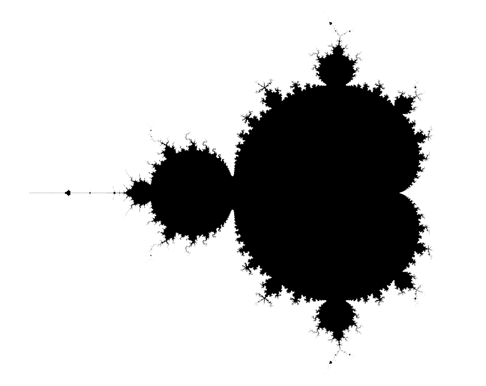

If you’re bored
If you zoom in on the edges of the set and assign different colors depending on the number of iterations required to exceed a modulus of 2, you can obtain very beautiful images:

The Mandelbrot Set is a set of complex numbers. Since complex numbers can be represented on a plane (the complex plane, with the real axis on x and the imaginary axis on y), this set can be visualized as an image:

A complex number belongs to the Mandelbrot Set if the following sequence is bounded:
Unfortunately, there is no quick way to determine whether the sequence is bounded for a given value of . However, it has been proven that if the modulus of exceeds 2, then the sequence diverges.
The procedure to determine whether a complex number belongs to the Mandelbrot set is straightforward: compute the sequence until either
In the first case, does not belong to the set. In the second case, is considered part of the set. The larger the maximum number of iterations, the more accurate the representation of the Mandelbrot set will be.
Create a program that generates an image of the Mandelbrot set. At startup, the program will receive as parameters:
You can use whatever language you want.
Once this is done, for a given representation, plot a graph of execution time as a function of the number of threads.
If you zoom in on the edges of the set and assign different colors depending on the number of iterations required to exceed a modulus of 2, you can obtain very beautiful images: